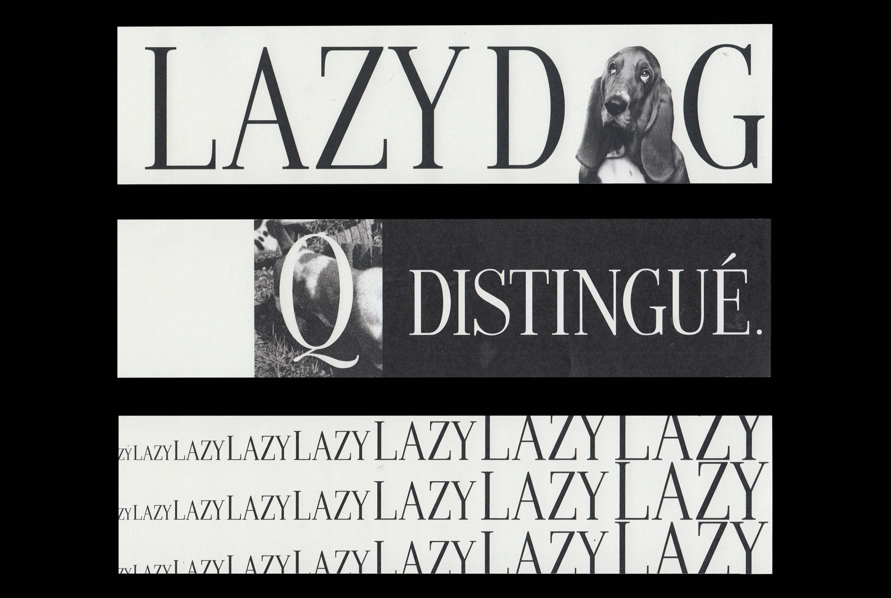
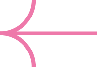
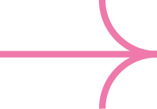

Garance Anglio
Projects
About
Contact
Basset Hound Typeface
Type design inspired by a 1964 Kodak logo and its specimen.
→ The specimen emphasizes the serifs' letters' elegance by contrasting with a legendary lazy dog, the Basset Hound's physionomy.


